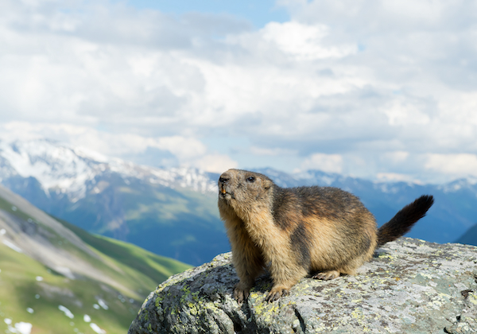

Welcome to Whistle Pig World!
Discover fascinating facts about one of nature's cutest burrowers — Groundhogs!
All about Whistle Pigs
Groundhogs, also known as woodchucks, are amazing creatures that can be found across North America.
From their iconic hibernation to their role in weather prediction on Groundhog Day, groundhogs are full of surprises. Here at Whistle Pig World, we aim to share fun facts, habits, and the unique role they play in the ecosystem.
Fun facts about Whistle Pigs:
- Did You Know? Groundhogs are excellent diggers and can move over 700 pounds of dirt while creating their burrows.
- Weather Predictors: Groundhogs have a famous tradition of "predicting" the weather every February 2nd on Groundhog Day!
- Big Sleepers: Groundhogs hibernate during winter, falling into a deep sleep for up to six months to survive the cold.
- Even though they can be called woodchucks, they have nothing to do with wood!